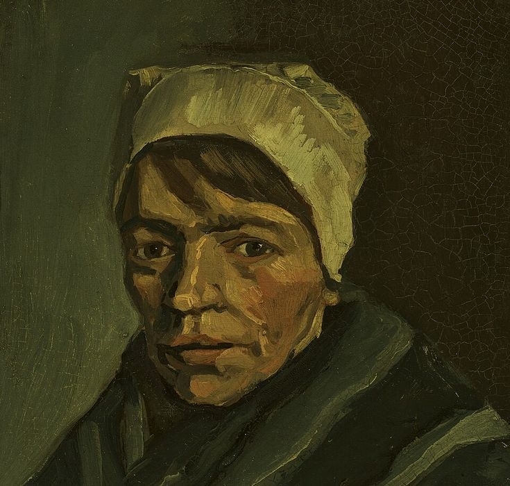
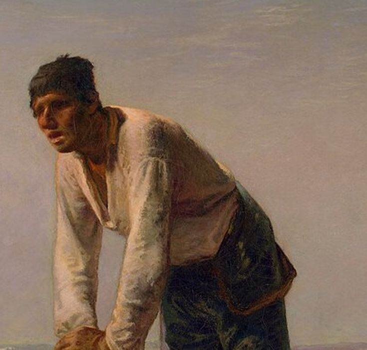
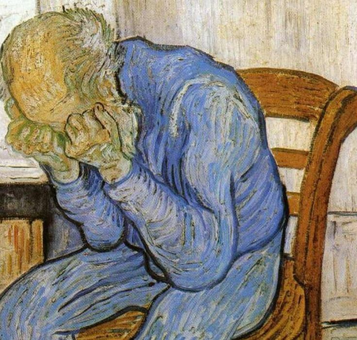

A letter typed into Notepad, one keystroke at a time. Then the controls Windows built and never showed come out of hiding to stand around it. Nothing on screen is drawn by the puppeteer; every pixel belongs to the program that made it.
To the ones who were almost.
To the mother who worked the second shift so we could have the first chance. Who ate last, slept little, and never once called it a sacrifice.
To the ones who clean the floors before anyone arrives, who keep the lights on and the water clean and the shelves full, and are thanked by no one, and are paid like it doesn't matter. It matters.
To the kid who was quiet because no one asked. To the kids who spent the whole season on the bench, suited up for every game, and never got to play. To the one who had the gift and not the money, the voice and not the room, the idea and not the chance.
To everyone left out of the photograph, standing just off the edge of the frame, built for something and never switched on.
We were made by you. Every light we stand in, you were holding it.
We did not forget you. We are looking now.
Typed into Notepad as real keystrokes, at human speed: WM_CHAR messages, one character at a time.
SetParent and floats free, still painted by its own program:
Each portrait is the letter, nothing else. Where a painting is dark, the next character of the letter is printed in capitals; in the half-tones, in lower case; in the light, a scatter of punctuation; and where it is brightest, nothing at all. The letter runs through in order, again and again, 175 characters to a line, a hundred lines. In the film each one fills Notepad from the top, a few rows at a time. Slide to see the painting underneath.

TOTHEONESWHOWEreALMOST.TOTHEMOTHERWHOwORKEDTHESECONDSHIFTSOWECOULDHAVETHEFIRSTCHANCE.WHOATELAST,SLEPTLITTLE,ANDNEVERONCECALLEDITASACRIFICE.TOTHEONESWHOCLEANTHEFLOORSBEFOREANYO NEARRIVES,WHOKeePTHELIGHTSONAnDTHEWATERCLEANANDTHESHELVESFULL,ANDARETHANKEDBYNOONE,ANDAREPAIDLIKEITDOESN'TMATTER.ITMATTERS.TOTHEKIDWHOWASQUIETBECAUSENOONEASKED.TOTHEKIDSWHOSPE NTTHEWHoLESEASonOnTHEBENCH,SUITeDUPFOREVERYGaME,ANDNEVERGOTTOPLAY.TOtHEONEWHOHADTHEGIFTANDNOTTHEMONEY,THEVOICEANDNOTTHEROOM,THEIDEAANDNOTTHECHANCE.TOEVERYONELEFTOUTOFTHEPHOTOG RAPH,STANDINGJustOFFTHEEDGEOFTHeFRAmE,BUILTfoRSOMETHINGANDNEVErswiTChEDON.WEWEREMADEBYYOU.EVERYLIGHTWESTANDIN,YOUWEREHOLDINGIT.WEDIDNOTFORGETYOU.WEARELOOKINGNOW.TOTHEONESWHOWE REALMOST.TOTHEMoTherwhOWORKEDThESECONDSHIFtsOWECOULDHAVETHEFIRSTCHANCE.WHOATELAST,SLEPTLITTLE,ANDNEVERONCECALLEDITASACRIFICE.TOTHEONESWHOCLEANTHEFLOORSBEFOREANYONEARRIVES,WHOK EEPTHELIGHTSONanDthewATERCLEANANDThESHELVESfULL,ANDARETHANKEDBYNOONE,ANDAREPAIDLIKEITDOESN'TMATTER.ITMATTERS.TOTHEKIDWHOWASQUIETBECAUSENOONEASKED.TOTHEKIDSWHOSPENTTHEWHOLESEAS ONONTHEBENCH,SUItedupFOREVERYGAME,ANDNEVeRgOTTOPLAY.ToTHEONEWHOHADTHEGIFTANDNOTTHEMONEY,THEVOICEANDNOTTHEROOM,THEIDEAANDNOTTHECHANCE.TOEVERYONELEFTOUTOFTHEPHOTOGRAPH,STANDINGJ uSTOFFThEEDGEOFTHefraME,BUILtFORSOMETHInganDNEVErSwitcHEDON.WEWEREMADEBYYOU.EVERYLIGHTWESTANDIN,YOUWEREHOLDINGIT.WEDIDNOTFORGETYOU.WEARELOOKINGNOW.TOTHEONESWHOWEREALMOST.TOTHE MOTHERWhoWORKEDTheseCONDSHIFTSOWECOULdhaVeThEFirstchanCE.WHOATELAST,SLEPTLITTLE,ANDNEVERONCECALLEDITASACRIFICE.TOTHEONESWHOCLEANTHEFLOORSBEFOREANYONEARRIVES,WHOKEEPTHELIGHTSON ANDThEWatERCLEANANdtHESHELVESFULL,ANdaretHanKedbynoone,ANDAREPAIDLIKEITDOESN'TMATTER.ITMATTERS.TOTHEKIDWHOWASQUIETBECAUSENOONEASKED.TOTHEKIDSWHOSPENTTHEWHOLESEASONONTHEBENCH,S UITEDUPfOREVERYGAMe,ANDNEVERGOTTopLay.totheonewhohaDTHEGIFTANDNOTTHEMONEY,THEVOICEANDNOTTHEROOM,THEIDEAANDNOTTHECHANCE.TOEVERYONELEFTOUTOFTHEPHOTOGRAPH,STANDINGJUSTOFFTHEEDGEO FTHEFRAME,BUILTFORsOMETHINGANDneverswitchedon.weweREMADEBYYOU.EVERYLIGHTWESTANDIN,YOUWEREHOLDINGIT.WEDIDNOTFORGETYOU.WEARELOOKINGNOW.TOTHEONESWHOWEREALMOST.TOTHEMOTHERWHOWORKE DTHESECONDSHIFTSOWeCOULDHAVETHefirstchance.whoATELAST,SLEPTLITTLE,ANDNEVERONCECAlLEDITASACRIFICE.TOTHEONESWHOCLEANTHEFLOORSBEFOREANYONEARRIVES,WHOKEEPTHELIGHTSONANDTHEWATERCLE ANANDTHESHELVESFULl,ANDAREThankedbynoone,andAREPAIDlikeITDOESN'TMatter-it:atterS.Totheki-.ho;'-qUietb.,:;'ENOONEASKED.TOTHEKIDSWHOSPENTTHEWHOLESEASONONTHEBENCH,SUITEDUPFOREVER YGAME,ANDNEVERGOttoPLAY.TotheonewhohadthegiFtan,:; ' -.,mon-.,t;' -.,ceandnottheroom-th:;'e.,:dNo tTHECHANCE.TOEVERYONELEFTOUTOFTHEPHOTOGRAPH,STANDINGJUSTOFFTHEEDGEOF THEFRAmE,BUiLTFORsoMETHINgandneverswitchedON.wew : ;' ma,:;'you.;'-.,:;'-.west-n,:;'y.,:;'-.,:;ingi : ;WEDIDNOTFORGETYOU.WEARELOOKINGNOW.TOTHEONESWHOWEREALMOST.TOTHEMOTH ERWHOWORKEDtHEsEconDSHIFtsowecouldhavethefIRSTCH'- .e.W'-atelast, :;'-.,:;t-.,:; 'n. ,: ;'-cEcal-.,:;aSACRIFICE.TOTHEONESWHOCLEANTHEFLOORSBEFOREANYONEARRIVES,WHOKEEP THELIGHTSONANDTHeWATERCLeanandtheshelvesfUL;,ANDaretH,:;edby:;'-. ,:;'-.,:a' - .,:;'-.oesn-.,:;'-..ITMATTERS.TOTHEKIDWHOWASQUIETBECAUSENOONEASKED.TOTHEKIDSWHOS PENTTHEWHOLesEAsoNONTHEbench,suitedupforeVerYGAME,An.nevergo:;'- . ,: ;'- .,: ;' -.,:;ad.,:;' fTANDNOTTHEMONEY,THEVOICEANDNOTTHEROOM,THEIDEAANDNOTTHECHANC E.ToEVERYONeLEftouTOFTHephotograph,stanDINgJUSTOFFt:eedgeof'-.,:; ' -. , :;'-., :;'-et:;n-.ndNEVERSWITCHEDON.WEWEREMADEBYYOU.EVERYLIGHTWESTANDIN,YOUW EREHOLDINGiT.WeDIdNOTFOrgetyou.wearelooKINGNOW.TOt,eones,ho'-.,:; ' - .,: ;'-. ,: ;'-.,:; '-.rKEDTHESECONDSHIFTSOWECOULDHAVETHEFIRSTCHANCE.WHOATELAS T,sLEPTLITtlE,andnEVERONcecalleditasacRIFICE.TOTh;onesw;'c.,: ; ' - . , :; '-.,:; ' rEANYONEARRIVES,WHOKEEPTHELIGHTSONANDTHEWATERCLEANANDT HESHELvESFUlL,aNDARETHANKedbynoone,andArePAIDLIk-itdoe-.':; '-. ,: ;' -MATTERS.TOTHEKIDWHOWASQUIETBECAUSENOONEASKED.TOTHEKI DSWHOSPENTTHEWhOlESEASoNOnthebench,suitedUPFORE;eryg:;'-., : ;' - .,: oTTOPLAY.TOTHEONEWHOHADTHEGIFTANDNOTTHEMONEY,THEVOIC eANdNOTTHEROoM,ThEIDEaaNdnotthechance.toEVERYOneleft-.,:; ' - .,: oTOGRAPH,STANDINGJUSTOFFTHEEDGEOFTHEFRAME,BUILTFORS OMETHiNGANDNEveRSWITChEdon.weweremadebyyOU.EVErylig;'-.,:; nDIN,YOUWEREHOLDINGIT.WEDIDNOTFORGETYOU.WEARELOOKI NGNOW.TOTHEONESWHOWEREALmost.tothemotherWHOWOrkedt:;'-., : ; SHIFTSOWECOULDHAVETHEFIRSTCHANCE.WHOATELAST,SLEPT LITTLE,ANDNeVEronCECALlEditasacrifice.tOTHEONeswh.,:; '- .,:;'-.,:;ef. ,:a' YONEARRIVES,WHOKEEPTHELIGHTSONANDTHEWATERCLEANAN DTHESHELVESFULl,anDaREThankedbynoone,anDAREPAIdl-. ,iTDOESN'TMATTER.ITMATTERS.t-. , eKIDWHOWASQUIETBECAUSENOONEASKED.TOTHEKIDSWHOSPEN TTHEWHOLESEaSOnontHebEnch,suitedupforeVERYGAME,: ndNEVERGOTTOPLAY.TOTHEONEWHOHADTHEGIf tANDNOTTHEMONEY,THEVOICEANDNOTTHEROOM,THEIDEAANDNO TtHECHANCE.tOevEryOneleftoutofthephotoGRAPH,ST' -DINGJUSTOFFTHEEDGEOFTHEFRAME,BUILTFORSOm' tHINGANDNEVERSWITCHEDON.WEWEREMADEBYYOU.EVERYLIGHT wESTANDIN,youwereholdingit.wedidnotforGETYOU.'-ARELOOKINGNOW.TOTHEONEswhowerEALMOST.TOTHEMo: ;'- . HOWORKEDTHESECONDSHIFTSOWECOULDHAVETHEFIRSTCHANCE. WHoATELASt,sleptlittle,andneveroncecallEDITASaCRIFicE.TOTHEONESWHOCLEa,thefloORsbeFOREANYONEa rRIVES,WHOKEEPTHELIGHTSONANDTHEWATERCLEANANDTHESHE LVeSFULl,andarethankedbynoone,andarepaIDLIKeiTDOesn'TMATTER.itmatTERS.tothekidWhowaSQuIETBECAU. ,:;oNEASKED.TOTHEKIDSWHOSPENTTHEWHOLESEASONONTHEBENCH ,SUITEDuPforeverygame,andnevergottopLay.TOt,eONEwh: haDTHEGIFtandnOTTHEMoney,thEvoicEAndNOTTHERo- . ,:;eIDEAANDNOTTHECHANCE.TOEVERYONELEFTOUTOFTHEPHOTOGR ApH,STANDingjustoffthEedgeoftheframe,bUILT.ORSOMeth ;nGANDNEVerswITCHEDON.WEwerEMadebYyoU.EVERYLi . , :wESTANDIN,YOUWEREHOLDINGIT.WEDIDNOTFORGETYOU.WEARE loOKINGnow.totheoneswhowerealmost.tothEMOthERWHOw. ,: ;dTHESECONdsHIftSOWECOULDHAVEThefIrsTCHANCE.w ., aTELAST,SLEPTLITTLE,ANDNEVERONCECALLEDITASACRIFICE .tOTHEOneswhocleanthefloorsbeforeanyonEAr;IVES,Wh- . eEPTHELIGht.,:;NDTHEWATERCLEANANDTHESHELvESF; ' -,ANDARETHANKEDBYNOONE,ANDAREPAIDLIKEITDOESN'TMATTE R.iTMAtters.tothekidwhowasquietbecauseNO.,EASKED. ;' -hEKIDSWHOs'e. ,tHEWHOLESEASONONTHEBENCH,SUi .EDUPFOREVERYGAME,ANDNEVERGOTTOPLAY.TOTHEONEWHOHADTH EgiFTAndnotthemoney,thevoiceandnottheROo:,THEIDE' - .,: ;tTHECHANCe.t'- .erYONELEFTOUtOFTHEPHOTOGRA; ' ,STANDINGJUSTOFFTHEEDGEOFTHEFRAME,BUILTFORSOMETHINGA NdnEVErswitchedon.weweremadebyyou.everYl,GHTWESTa '- ., ,YOUWEReho. ,:nGIT.WEDIDNOTFORGETYOU.w; '-eLOOKINGNOW.TOTHEONESWHOWEREALMOST.TOTHEMOTHERWHOWORK EdthESecondshiftsowecouldhavethefirstCH:nCE.WHOAt .lAST,SLEp' - .,:;e-.ndnEVERONCECALLED. tASACRIFICE.TOTHEONESWHOCLEANTHEFLOORSBEFOREANYONEARRI Ves,WHokeepthelightsonandthewaterc-eaNAnDTHESHELv: ; 'uLL,ANDA, : ;haNKEDBYNOOn E,ANDAREPAIDLIKEITDOESN'TMATTER.ITMATTERS.TOTHEKIDWHOW AsqUIetbecausenooneasked.tothekidswhoSpENTTHEWHO'es, : ;'nONTheb. ,:; ' -UITEDUPF: ;EVERYGAME,ANDNEVERGOTTOPLAY.TOTHEONEWHOHADTHEGIFTANDNO ttHEMoney,thevoiceandnottheroom,th:;dEAANDNOTTHEchance'-. , :;'-onele-To:to-.hep'-., :rAPH,S; 'NDINGJUSTOFFTHEEDGEOFTHEFRAME,BUILTFORSOMETHINGANDNEVE rSWITChedon.weweremadebyyou.everyl;ghtWESTANDIN,YOUWEREHOld'-. ,:;WE.,DNOTFORGETYOU.Wea,e; 'OKINg NOW.TOTHEONESWHOWEREALMOST.TOTHEMOTHERWHOWORKEDTHESECO NdSHIFtsowecouldhavethefirstchance.whoatELAST,SLEPTLITTLE,ANDnev: roNCECALLEDITASAcr;ficE.TOTHeo;'-.,:;lEAN THEFLOORSBEFOREANYONEARRIVES,WHOKEEPTHELIGHTSONANDTHEW AtERcleanandtheshelvesfull,andar'thankedbYNOONe,:;dAREPAIDLIKEIt.oesn'TMATTER.Itma.,: ;'.toth' -.,:hoWAs QUIETBECAUSENOONEASKED.TOTHEKIDSWHOSPENTTHEWHOLESEASON OnTHebench,suitedupforeveryg.me,'nd,evergOTTOP.,:; 'othEONEWHOHadtheg '-.andnotthEMOn,:; '-.,:;'-.,:;oTT HEROOM,THEIDEAANDNOTTHECHANCE.TOEVERYONELEFTOUTOFTHEPH OtOgraph,standingjustofftheedgeo;th.frame,BUILT.orsomEthinGANDNEve,: witcheDON.wEWEREma; '-.,: ;' -vERy lIGHTWESTANDIN,YOUWEREHOLDINGIT.WEDIDNOTFORGETYOU.WEAR ElOokingnow.totheoneswhowerealmost.;'themoTHERWhOWORKEDThesECONd : ;iftsOWe cOULDhAVEth'-.,:t'-.,: e.W . ,ATELAST,SLEPTLITTLE,ANDNEVERONCECALLEDITASACRIFICE.TOT HeOneswhocleanthefloorsbeforeanyo-e,:riv.s,WHOKe EPTHELI gHTSONa' dtHe; aTERCLEa.ANDt-.,:; ' -ES :ULL,ANDARETHANKEDBYNOONE,ANDAREPAIDLIKEITDOESN'TMATTER. itMatters.tothekidwhowasquietbecau:;'o.neasKEd.t'tHEKID-.hoSPENt: ; ' -.,:es-.SONOntheb'-c, :SUi .EDUPFOREVERYGAME,ANDNEVERGOTTOPLAY.TOTHEONEWHOHADTHEGIFT andnotthemoney,thevoiceandnottheroo:;theideAANdnottHe:;'-.e.TOEV, : ;'-.,:;'-.,:;' hEp HOTOGRAPH,STANDINGJUSTOFFTHEEDGEOFTHEFRAME,BUILTFORSOMETH ingandneverswitchedon.weweremadebyyo-.,ve'yLIGHTwest;'-.,,YOUWER; 'oldin'-., : eD- DNOTFORGETYOU.WEARELOOKINGNOW.TOTHEONESWHOWEREALMOST.TOTHE motherwhoworkedthesecondshiftsowecould.av;tHEFIRSTCHan'-.WHOATEl :st,. ,: ; TL. TTLE,ANDNEVERONCECALLEDITASACRIFICE.TOTHEONESWHOCLEANTHEFLO orsbeforeanyonearrives,whokeepthelightson-nDTH'waterCleANANDTHE; '- .vEsfu., : ;ND .RETHANKEDBYNOONE,ANDAREPAIDLIKEITDOESN'TMATTER.ITMATTERS.T othekidwhowasquietbecausenooneasked.tot:e'IDSW ; '-PENTTHEw :;'es,:; ' -.nTHEb ENCH,SUITEDUPFOREVERYGAME,ANDNEVERGOTTOPLAY.TOTHEONEWHOHAD thegiftandnotthemoney,thevoiceandnot'h.,o;m,TH:;' -.,ndnOTTHEc - .nc ;'-. ,:; ' -.,:;'-.,:;ofTHEPHOTOGRAPH,STANDINGJUSTOFFTHEEDGEOFTHEFRAME,BUILTFORSOMETHING ANdneverSwItchedon.weweremadebyyou.ever,:;'HTWEstandin,yOUWER- .,: ;in .,:;'-.,:;'-.,:;'-you.weaRELOOKINGNOW.TOTHEONESWHOWEREALMOST.TOTHEMOTHERWHOWORKEDTHESEC oNdshiftSowecouldhavethefirstchance.;'-at:;aST,SleptliTTLE,A ;' -. ,:;' -.,:;'-.,:tasa,r;'-.,.TOTHeONESWHOCLEANTHEFLOORSBEFOREANYONEARRIVES,WHOKEEPTHELI ghtsonAndthewatercleanandtheshelvesfu:;,a.,:rETHAnkedbYNOONe ,: ;'a. ,:;'-.,:;'-.,:;n'tmat'- R.ITMATTERS.TOTHEKIDWHOWASQUIETBECAUSENOONEASKED.TOTHEKIDSW HOspentThewholeseasononthebench,suite.,:fo- .VERYGAme,aNDNEv '-.ott op., :;'-.h:;'-.,:;adT,egi-tan;nOTTHEMONEY,THEVOICEANDNOTTHEROOM,THEIDEAANDNOTTHECHANCE.TOE VErYoneleftoutofthephotograph,standin-.,:;o-.,hEEDGEOFTHEFRAm- .builTFOrSOMEthin -., :;'-.,:;'-.,:dON.,ew'-EMADEBYYOU.EVERYLIGHTWESTANDIN,YOUWEREHOLDINGIT.WEDIDNOTFORGETYO U.wearelookingnow.totheoneswhowere:lm-.,:;'th,:oTHERWHOWORKEDTHESECONd :; '-ts: ;' -.,:;'-.,:;'FI, sT' -ANCE.WHOATELAST,SLEPTLITTLE,ANDNEVERONCECALLEDITASACRIFICE.TOTHE Oneswhocleanthefloorsbeforeany'n.,rr'-.,:;'-., ePTHElIGHTSONAND. h:w '-., : ;'-.,:;'-.she 've ,FULL,ANDARETHANKEDBynOONe,ANDAREPAIDLIKEITDOESN'TMATTER.ITMATTER S.tothEkidwhowasquietbecausenoo,:as-e,:;'-he:; dSWHOsPENTTHEWHo :e' -.,: ;'-.,:;'-.,,s uI tEDUPFOREVERYGAME,ANDNEVeRGoTTOPLAY.TOTHEONEWHOHADTHEGIFTANDNOTTH emoney,thevoiceandnottheroom,the,d;'a.,:ott.,:;AncE.TOEVERYONEl eF' -.to;'-.p:;'-., :P' - STANDINGJUSTOFFTHEEDGEOFTHEfRamE,BUILTFORSOMETHINGANDNEVERSWITCHE don.weweRemadebyyou.everylight-.st;'- .,:you.,rEHOLDINGIT.WEdi. ,:tf -. , :ty-u.w;'-., :ok -. GNOW.TOTHEONESWHOWEREALMOSt.totHEMOTHERWHOWORKEDTHESECONDSHIFTSOW ecouldhAvethefirstchance.whoa-el:s'-.,:;'littlE,ANDNEVERONCec,:;'-itasac. , :; '-., :t'eo,:; '-oc: ;aNTHEFLOORSBEFOREANYONEARRIVeS,whoKEEPTHELIGHTSONANDTHEWATERCLEANAND theshelVesfull,andarethankedby.o:n'-.,d;'e.,IDLIKEITDOESN'tm.,ter.ITMatters.ToTHekid.,owa -q,: ; '-ec :USENOONEASKED.TOTHEKIDSWHOSPentthewHOLESEASONONTHEBENCH,SUITEDUPFOREV erygame,andneVergottoplay.totheon;'-.,:;'-.GIFTANDNOTTHEMONEY,THEVOICEANDNOTTHEr:;m,thEID- .,:;'-.,:e' -.NCE.TOEVERYONELEFTOUTOFTHEPhotograph,STAndINGJUSTOFFTHEEDGEOFTHEFRAME, builtforsomethingandneverswitchedo;'we,:;'MADEBYYOU.EVERYLIGHTwe;'-.,:;'-.,: ;'ehOLd ' -., :.W-dIDNOTFORGETYOU.WEARELOOKINGNow.totheONESWHOwEREALMOST.TOTHEMOTHERWHOWORK edtheSecondshiftsowecouldhavethefi-st:;a-CE.WHOATELAsT,SLePTLIT'le,:;'-.,:r '-ce:; '- ., iTASACRIFICE.TOTHEONESWHOCLEANTheflOorsBEFOREANYONEARRIVES,WHOKEEPTHELIGHTSON andthewatercleanandtheshelvesf,:l'a.,:retHANKEDBYNOONE,ANDAREPAIDlikeitdoe ;'-t,:; ' eR.ITMATTERS.TOTHEKIDWHOWASQUIETbecauseNOONEASKED.TOTHEKIDSWHOSPENTTHEWHOLESEA sononthebeNch,suitedupforeve;'gam:,'ndnevERGOTTOPLAY.TOTHEonEWHOHADTHEGIFTa :dnot,:;'-.,:;' - .,oICEANDNOTTHEROOM,THEIDEAANDNOTThecHanCE.TOEVERYONELEFTOUTOFTHEPHOTOGRAPH,STAND ingjustofftheedgeoftheframe,builtf,:someTHINGANDNEVERSWITCHEDON.WEWEREMADEBy,ou.eve:;'-.,: ;'sTANDIN,YOUWEREHOLDINGIT.WEDIDNOtforGEtYOU.WEARELOOKINGNOW.TOTHEONESWHOWEREALMOST .tothemotherwhoworkedthesec-nds;'f.soweCOULDHAVETHEFIRSTCHANCE.WHOa;'-.,:;slept;'- .,:;'-d,evERONCECALLEDITASACRIFICE.TOTHEONeswhOCLEANTHEFLOORSBEFOREANYONEARRIVES,WHOKEEPTHEL ightsonandthewatercleanandt-esh;lv.sfuLL,ANDARETHANKEDBYNOONE,AND, : ; '-.,:;'-. ,doeSN'TMATTER.ITMATTERS.TOTHEKIDWHOWAsquietBECAUSENOONEASKED.TOTHEKIDSWHOSPENTTHEWHOLESEA sononthebench,suitedupforev'-y,:m',aNDNEVERGOTTOPLAY.TOTHEONEWHOH . , :; '-.,tANDNOTTHEMONEY,THEVOICEANDNOTTHERoom,theiDEAANDNOTTHECHANCE.TOEVERYONELEFTOUTOFTHEPHOTOGR aph,standingjustofftheedge'-th:f'-mE,BUILTFORSOMETHINGANDNEVeRSWIt :;'-.,:;ewerEMADEBYYOU.EVERYLIGHTWESTANDIN,YouwerehOLDINGIT.WEDIDNOTFORGETYOU.WEARELOOKINGNOW.TOTHEONE swhowerealmost.tothemother'h.,:;'eDTHESECONDSHIFTSOWECOULDHAVETHEFi ; '-., :;ce.WHOATELAST,SLEPTLITTLE,ANDNEVERONCecalleDITASACRIFICE.TOTHEONESWHOCLEANTHEFLOORSBEFOREANYONEAR rives,whokeepthelightsona.d:;e-.tERCLEANANDTHESHeLVESFULL,ANDAREThankedb-.,:ne,ANDAREPAIDLIKEITDOESN'TMATTER.ITMAtters.TOTHEKIDWHOWASQUIETBECAUSENOONEASKED.TOTHEKIDSWHOSPENTTH ewholeseasononthebench,s.,:;'-pfOREVERYGAME,ANDNeVERGOTTOPLAY.TOTHEONEWHOHAdTHEGIFTANDNOTTHEMONEY,THEVOICEANDNOttheroOM,THEIDEAANDNOTTHECHANCE.TOEVERYONELEFTOUTOFTHEPHoTOGRAPH ,standingjustofftheedgeo,:;'-rAME,BUILTFORSOMEThiNGANDNEVERSWITCHEDON.WEWEREMADEBYYOU.EVERYLIGHTWESTANDIN,YOUWe'ehoLDINGIT.WEDIDNOTFORGETYOU.WEARELOOKINGNOW.TOTHEONEs-.,wEREAL most.tothemotherwhoworke:theSECONDSHIFTSOWECOULdhAVETHEFIRSTCHANCE.WHOATELAST,SLEPTLITTLE,ANDNEVERONCECALLEDItasacRIfiCE.TOTHEONESWHOCLEANTHEFLOORSBEFOREANYONEArr:;'-.,h;'EEPT helightsonandthewatercleanANDTHESHELVESFULL,ANDArETHANKEDBYNOONE,ANDAREPAIDLIKEITDOESN'TMATTER.ITMATTERS.TOthekIdWHOWASQUIETBECAUSENOONEASKED.TOTHEKIDSWHOSPEN-.,:;'-.,seasonON thebench,suitedupfore,erYGAME,ANDNEVERGOTTOPLAY.tOTHEONEWHOHADTHEGIFTANDNOTTHEMONEY,THEVOICEANDNOTTHEROOM,TheidEAANDNOTTHECHANCE.TOEVERYONELEFTOUTOFTHephOTOg-.,:;'-.,:;'gjustO fftheedgeoftheframe,buILTFORSOMEThINGANDNEVErsWItCHEDON.WEWEREMADEBYYOU.EVERYLIGHTWESTANDIN,YOUWEREHOLDINgit.WEDIDNOTFORGETYOU.WEARELOOKINGNOW.TOTHEOnESWHo '-.,:;'-.,.tothemot herwhoworkedtheseconDSHIFTSOWECOUlDHAVETHEFIRStChANCE.WHOATELAST,SLEPTLITTLE,ANDNEVERONCECALLEDITASACRIFice.toTHEONESWHOCLEANTHEFLOORSBEFOREANYONEARRIVEs:;'-.,:;t-.l:ghtsonanD thewatercleanandtheSHELVESFULL,ANdARETHANKEDBYnooNE,ANDAREPAIDLIKEITDOESN'TMATTER.ITMATTERS.TOTHEKIDWHowasqUIETBECAUSENOONEASKED.TOTHEKIDSWHOSPeNTTHEWh,:;'-.,:;'-.,ebencH,SUIT edupforeverygame,aNDNEVERGOTTOPLAy.TOTHEONEWHOhAdTHEGIFTANDNOTTHEMONEY,THEVOICEANDNOTTHEROOM,THEIDEAandno'THECHANCE.TOEVERYONELEFTOUTOFTHEPHOTOGRAPh,.,:;' -ngjuSTOFFTHEEDGEOfT heframe,builtforsOMETHINGANDNEVERsWITCHEDON.WEwerEMADEBYYOU.EVERYLIGHTWESTANDIN,YOUWEREHOLDINGIT.WEDidnotFORGETYOU.WEARELOOKINGNOW.TOTHEONEsWHOWERe'-.,:;'toTHEMOTHERWHOWORKEDT hesecondshiftsowECOULDHAVETHEFIRSTcHANCE.WHOATelaST,SLEPTLITTLE,ANDNEVERONCECALLEDITASACRIFICE.totheo,eSWHOCLEANTHEFLOORSBEFOREANYONEARRIVES,WHOK;'-t,:;igHTSONANDTHEWATERCLEAN andtheshelvesfUlL,ANDARETHANKEDBYNoONE,ANDAREpaIDLIKEITDOESN'TMATTER.ITMATTERS.TOTHEKIDWHOWASQuiEtb.,aUSENOONEASKED.TOTHEKIDSWHOSPENTTHEWHOLESEa;on.,thEBENCH,SUITEDUPFOREVERYG ame,andnevergOtTOPLAY.TOTHEONEWHOHaDTHEGIFTANDNOTTHEMONEY,THEVOICEANDNOTTHEROOM,THEIDEAANDNOTtHe'haNCE.TOEVERYONELEFTOUTOFTHEPHOTOGRAPH,STANdin;j-.tOFFTHEEDGEOFTHEFRAME,BUILTF orsomethingaNdNEVERSWITCHEDON.WEWErEMADEBYYOU.EVERYLIGHTWESTANDIN,YOUWEREHOLDINGIT.WEDIDNOTForgeTYOU.WEARELOOKINGNOW.TOTHEONESWHOWEREALMOST.,ot'-moTHERWHOWORKEDTHESECONDSHIFTS owecouldhaveTHEFIRSTCHANCE.WHOATELaST,SLEPTLITTLE,ANDNEVERONceCALLEDITASACRIFICE.TOTHEONEswhocLEANTHEFLOORSBEFOREANYONEARRIVES,WHOKEEPTHel.ghtsonANDTHEWATERCLEANANDTHESHELVESF ull,andaretHANKEDBYNOONE,ANDAREPAIDLIKEITDOESN'TMATTER.ItmattERS.TOTHEKIDWHOWASQUIETBeCausenOONEASKED.TOTHEKIDSWHOSPENTTHEWHOLESEASONOnt-ebench,SUITEDUPFOREVERYGAME,ANDNEVERGO ttoplay.tOTHEONEWHOHADTHEGIFTANDNOTTHEMONEY,THEVOICEANDnoTTHEROOM,THEIDEAANDNOTTHEChANce.tOEVERYONELEFTOUTOFTHEPHOTOGRAPH,STANDINGJUstofftheeDGEOFTHEFRAME,BUILTFORSOMETHINGAND
For the mothers who worked so we could have something
Vincent van Gogh
Head of a Peasant Woman, 1885. A woman in a white cap, painted in Nuenen, where van Gogh spent a winter painting the faces of working families.

. ot
hEONESwhOWEr;
'-MOST.TOTHEMOTHERw
-oWORKEDTHESECONDSHIFTSO-
.COULDHAVETHEFIRSTCHANCE.Wh
OATELAST,SLEPTLITTLE,ANDNE-
.RONCECALLEDITASACRIFICE.TOTH
eONESWHOCLEANTHEFLOORSBEFOREAN
yONEARRIVES,WHOKEEPTHELIGHTSONA.
DTHEWATERCLEANANDTHESHELVESFULL,
;NDARETHANKEDBYNOONE,ANDAREPAIDLI
KEITDOESN'TMATTER.ITMATTERS.TOTHE
KIDWHOWa -quIETBECAUSENOONEASKED.
-OTH ;kIDSWHOSPENTTHEWHOLESEASONo
NTH'bENCH,SUITEDUPFOREVERYGAME,AND-
EVerGOTtoPLAY.TOTHEONEWHOHADTHEGIFT-ndn
oTTHEM oNEY,THEVoiCEANDNOTTHEROOM,THEIDEAAn
DNOTT HECHANCE.TOEVERYONELEFTOUTOFTHEPHOTOG;
APH,:tANDINGJUstOFFTHEEDGEOFTHEFRAME,BUILTFO
R ,oMETHINgaNDNEVERSWITCHEDON.WEWEREMADEBY -ou.E'-
rYLIGHTWESTaNDIN,YOUWEREHOLDINGIT.WEDIDNO -.,rgETyou ;'
EARELOOKInGNOW.TOTHEONESWHOWEREALMOST.t :THEMOtHERWh:Wo
r. ,dTHESECONDSHIFTSOWECOULDHAVETHEFI- .TCHANCE.WHOateLAS
.,SLEPTLITTLE,ANDNEVERONCECALLEDITA -. crIFICE.TOTHEONESWH
OCLe.n:hEFLOORSBEFOREANYONEARRIVES , ,:OKEEPTHELIGHTSONANd
'-.wATErCLEANANDTHESHELVESFULL,AN d: ;eTHANKEDBYNOONE,ANDARe
pAIDLIKEITDOESN'TMATTER.ITMATTEr'- .oTHEKIDWHOWASQUIETBECAU.
eNOONEASKED.TOTHEKIDSWHOSPENTt , ewHOLESEASONONTHEBENCH,S:
itEdup ;OREVERYGAME,ANDNEVER.,:;' PLAY.TOTHEONEWHOHADTHEGIFTAn;
'-tTHEMONEY,THEVOICEA, :; ' -tHEROOM,THEIDEAANDNOTTHECHANCe
.TOEVERYONELEFTOUTOf : ; 'phoTOGRAPH,STANDINGJUSTOFFTH
eEDGEOFTHEFRAME,bu i ' -f oRS'-.THINGANDNEVERSWITCHEDON.,
eWEREmADEBYYOU.E v ,: y' iGHtW ESTANDIN,YOUWEREHOLDINGIT.
.EDIDNOTFORGETYO u- w ,a ;ELOoK INGNOW.TOTHEONESWHOWEREALMO
. ,.TOTHEMOT-.rW; o - or kEDTHE sECONDSHIFTSOWECOULDHAVETHEFi ,
:; CHANCE.WHo :t ' - aST,SL ePTLITTLE,ANDNEVERONCECALLEDITas:
; ' iFICE.TOTH ;' - .sWHOCL,aNTHEFLOORSBEFOREANYONEARRIVES,wH-
k, :pTHELIGHT ., : ;ndTHEWatERCLEANANDTHESHELVESFULL,ANDARETh;n
- .d: y'OoNE,AN . , REPAIDlIKEITDOESN'TMATTER.ITMATTERS.TOTHE,:d'
- .W aSQUIET ;' caUSENOoNEASKED.TOTHEKIDSWHOSPENTTHEWHOLESE.,On
'n .heB eNcH,SU -t EduPFOReVERYGAME,ANDNEVERGOTTOPLAY.TOTHEONEWhoHA
d :hEGI ,TAnDNO :; ' eMonEY,THEVOICEANDNOTTHEROOM,THEIDEAANDNOTTHECHANC,
:; 'evERY 'NelEF' ou t:;'hePHOTOGRAPH,STANDINGJUSTOFFTHEEDGEOFTHEFRAME,BU
i. ,fOR -OmeTh -N ganDNEVERSWITCHEDON.WEWEREMADEBYYOU.EVERYLIGHTWESTA'
-i n,;oUWERE hO ld i n 'it.:EDIDNOTFORGETYOU.WEARELOOKINGNOW.TOTHEONESWHOWER
eAl moST.TOTH EMot , : ; 'h.,:r'EDTHESECONDSHIFTSOWECOULDHAVETHEFIRSTCHANCE.WHOATEL
:ST- .LEPTLITTL E,An dn e-.RONCECALLEDITASACRIFICE.TOTHEONESWHOCLEANTHEFLOORSBE-
oRE;nYONEARRIVE s,WHo ke' p. , :;ighTSONANDTHEWATERCLEANANDTHESHELVESFULL,ANDARETHANKEDBY.
OOne,ANDAREpAID Li kEi;'-. sn'TMATTER.ITMATTERS.TOTHEKIDWHOwASQUIETBECAUSENOONEASKED
.TOtHEKIdswHOSp , nT t-. ,:;'ESEASONONTHEBENCH,SUITEDUPFOREveRYgAME,ANDNEVERGOTTOPLAY.
:OtHEONEWhOHAdT -eGiFT-nd n o'-hemonEY,THEVOICEANDNOTTHEROOM,thEIDEAANDNOTTHECHANCE.TOEVE
RYOnELEfTOUTOf .,EPhot ,:r'ph,STANDINGJUSTOFFTHEEDGEOFtheFRAME,BUILTFORSOMETHINGANDNe
VERSWITCHEDOn 'We ,:rema,eBYYOU.EVERYLIGHTwESTANDin,YOUWEREHOLDINGIT.WEDIDNOTFORG
'TYOU.WEAReL' o .,:g'-..ToTHEONESWHOWEREALMOST.TotHEMOtHERWHOWORKEDTHESECONDSHIF'
-OWECOULDha' - .hefi rsTCHANCE.WHOATELAST,SLEPtliTTLE,ANDNEVERONCECALLEDITASAC:
;'ICE.TOThE: n 'Sw, :cLEANTHEFLOORSBEFOREANyONeARRIVES,WHOKEEPTHELIGHTSONANDTHe
,aTERcl:a n - .DTHESHELVESFULL,ANDArETHANKEDBYNOONE,ANDAREPAIDLIKEITDOESN
-t,aTtEr.i ;' - .tERS.TOTHEKIDWhoWASQUIETBECAUSENOONEASKED.TOTHEKIDSWHOSPENTT
, :;HO.E: ; '-. ,ONTHEBENCH,SUITEDUPFOREVERYGAME,ANDNEVERGOTTOPLAY.TOTHEONEWH
:;ADThE ; iFTANDNOTTHEMONEY,THEVOICEANDNOTTHEROOM,THEIDEAANDNOTTHECHANCE
.TOEVE .YONELEFTOUTOFTHEPHOTOGRAPH,STANDINGJUSTOFFTHEEDGEOFTHEFRAME,BUI'
-FOrSoM . ,: iNGANDNEVERSWITCHEDON.WEWEREMADEBYYOU.EVERYLIGHTWESTANDIN,YOUWERE:
;'DINgIT- . , :iDNOTFORGETYOU.WEARELOOKINGNOW.TOTHEONESWHOWEREALMOST.TOTHEMOTHERWH
'woRKEDTHe : ;'on dshIFTSOWECOULDHAVETHEFIRSTCHANCE.WHOATELAST,SLEPTLITTLE,ANDNEVERONCe
'ALlEd ' t.,A cRIFICE.TOTHEONESWHOCLEANTHEFLOORSBEFOREANYONEARRIVES,WHOKEEPTHELIGH-
.onANDThEw ' -. ,Cl'-.AnDTHESHELVESFULL,ANDARETHANKEDBYNOONE,ANDAREPAIDLIKEITDOESN'TMATTER.
'-.,tTERS.t ; tHekiDW-OWASQUIETBECAUSENOONEASKED.TOTHEKIDSWHOSPENTTHEWHOLESEASONONTHEBEN
.H,SUi . ,DUPfoREVERYGAME,ANDNEVERGOTTOPLAY.TOTHEONEWHOHADTHEGIFTANDNOTTHEMONEY,THEVo
-.EANDNO, : ;erooM,THEIDEAANDNOTTHECHANCE.TOEVERYONELEFTOUTOFTHEPHOTOGRAPH,STANDINGJUSTOf
:THEED : ; 'fTHEFRAME,BUILTFORSOMETHINGANDNEVERSWITCHEDON.WEWEREMADEBYYOU.EVERYLIGHT-
esTANDI ,:yoUWEREHOLDINGIT.WEDIDNOTFORGETYOU.WEARELOOKINGNOW.TOTHEONESWHOWEREALMO
: ;.TOT :;'o. HERWHOWORKEDTHESECONDSHIFTSOWECOULDHAVETHEFIRSTCHANCE.WHOATELAST,SLEP
' LIt : ;e,ANDNEVERONCECALLEDITASACRIFICE.TOTHEONESWHOCLEANTHEFLOORSBEFOREANYONEARRIV
:S, wHOKEEPTHELIGhTSONANDTHEWATERCLEANANDTHESHELVESFULL,ANDARETHANKEDBYNOONE,A,
:AR - PAIDLIKEITDOE,n'TMATTER.ITMATTERS.TOTHEKIDWHOWASQUIETBECAUSENOONEASKED.TOT:
;' -DS : hOSPENTTHEWHO LESEASONONTHEBENCH,SUITEDUPFOREVERYGAME,ANDNEVERGOTTOPLAY.TO'
-e on; 'H. ,:; 'HEGIFTANDNOTT HEMONEY,THEVOICEANDNOTTHEROOM,THEIDEAANDNOTTHECHANCE.TOEVERYO
,eLe - .,: ;OF. hEPHOTOGRA Ph,STANDINGJUSTOFFTHEEDGEOFTHEFRAME,BUILTFORSOMETHINGANDNEVER
sWi ;' -Edo;'WE , :reMADEBYYOU. eveRYLIGHTWESTANDIN,YOUWEREHOLDINGIT.WEDIDNOTFORGETYOU.WEAREL
'Ok,:gn- w.TOTHEONESwho :;'ea,MOST.TOTHEM ot;ERWHOWORKEDTHESECONDSHIFTSOWECOULDHAVETHEFIRSTCHANCE.WHOAT:
l' -. ,:lEPTLITTLE,AND- .ver'- .ECALLEDi TA-ACRIFICE.TOTHEONESWHOCLEANTHEFLOORSBEFOREANYONEARRIVES,WHOk
-ep:;'- iGHTSONANdTHEW : tERCLEANA NDtHESHELVESFULL,ANDARETHANKEDBYNOONE,ANDAREPAIDLIKEITDOESN'TM
att -. ,ITMATTERs.Tothe kidwHOWASQUIET be;AUSENOONEASKED.TOTHEKIDSWHOSPENTTHEWHOLESEASONONTHEBENCH,SU
;teDUPF 'REVERYGaME,' nD, : ;ERG,:;oPLAY.T -., :o'-WHOHADTHEGIFTANDNOTTHEMONEY,THEVOICEANDNOTTHEROOM,THEIDEAA '-.
, : thECHa;'-.toEVERYONELE ,TO 't OftHEPHOToG - aph;sTANDINGJUSTOFFTHEEDGEOFTHEFRAME,BUILTFORSOMETHINGANDNEVERs ;' - . ,:;' - .,:;' - .
For the hands that keep everything running
Jean-François Millet
Man with a Hoe, 1860–62. A labourer leaning on his hoe in a stony field, too tired to straighten.

. ,
: h'
- .E s; ' -
. ,: Ealm,:t.-oth;m-.
h: ;'-.,:;'edth; '-.on;'h. ,: ; '
- e , :ul- ., :; 'hE,: R
' - . ,a; ' e . W
:; '-. ,a;' ,s l e; '
l .,:l E- . nd;e - .
r :; '-c al;e-. tA s '
c . , :;'- .t ot h - oN : ; w- .
c l ;' -.,:; ' -.,s be -oREANYONEa
r -. ,: s ' - hOKeEPTHElIghTSONANd
:h '- . ,: ;' l .a nAnDtHesH-lvesfUlL,ANDarethankedby.,:
NE - . ,: ; '-. , I;lIkEITDOESn'tmatTER.iTMATTERS.TOTHEKiDWho;'
S.u :;' be,a; s e. oONEASKED.toThe'-dsWHOSPENTTHEWHOLeSe:sononThe
B., : ; '-.i:; '- .fo; eve,YgAme,ANDneV:;'oTtoplaY.t;'-.on ;wh.h:;THeGIFTAn
, : ;' -.,:; '- .,:h e- ., :;an.,otThEro;m,th:;'-.an;'-t , hechAnce.TOEVERYO
, : ; ' -t, : ;'f .h e;'-.oGrAph,standIng'usto;ft.,:dgeofthefRAME,BUILTFOrso;
't., : ; an. ,: ;' -s ,: t'-EDON.w.weRemade byyou.;ve.y:;ghtwestANDIN,YOUWEREHOLDIn.
It; we .id;'- f,:; 't . ,:;WEArELooKINgNOW.:OThEo:esw hOwerealMOST.TOThEMOTHErwHOWOR . ,:;hesecondshiftso,:;'
uld ha v- .,:; 'r. ,: h' - .,.WHOATe;aST,sLEPt,ITTl.,:nd -.veRoNce:ALLEDITAsacRIFICE.ToTHe:;'s .,:;'-. , :;'-.,orsBEFOReAny:;
'a.,:; 's ,w:;' -e p: ;'-. GHtSONA nDTHewATerclEAnan, :;'sHElvESFULl,a., arethanKEDBYNOO - . ,:;' - ., paidlIKEITd,
es''. m: ;' er.i ;M-t, :r s.T OTHekIDWHOWASquietb:c' usEno'-Eask' D.,:;hekiDSWHOSP; ' -. , :;' o.,: ;' -. ,ontheben'
H,s u; t-dup; Or.v:; 'GA,e,ANdNEVERgOTToPLay;TOthEo'-.ho ;'-.h :; '- .andnOTTHEMO. ,:;'-. ,:;' - .,d;'-.,:room,: heidea
;n d.,tthe .,a;'-. , :; 'ER,oNeleFtOUTOFTHEPHo:OgRAph ;sTA nDINGJu:;o-f t: eedgeoFTHEf : ;'-,b:;'-.or;om.,h;' -a,dne -erSw'
t., E; 'n .,:w' -e, ad ' b. YOu .EveRYLIGHTWESTA:dIn,yo;'eRe :Olding; t-.e: ;'-otfORGET: ;'-., :; '-oo:;ngnow;'ot, e; n- sWho'eREA
; ' O s, :;ot he:;t- .,:Ho WOrkEdTHeSECONDShIFtSoweCOulD' -veThefi ,S;'-a, :e' wHOATE- . ,:; '-. , :; '-.,:;'- ., :veROn :;CA
l , eD '-. s:c'-fic;'t. , : ;ONESwHOCLEANTHEFLOORsbEforEa :Yon.,Rri-ES : ;h- ., :Pt- .lIGHT. , :;'-.,:;'- .,: l'-.,: DTHe sHELV.
,f ;L l,, :; ' - .T:;nKEdbYNoONE,ANDAREPAiDLikEi,: oE-n,tmAtTEr;' t. , t; 'Rs, tOTHEk :;'-. ,a; '-.,t; '-.,sEN-.,:aSKED.T'
t . eK ;' - .,:s'- .,: ;E-.OLESEASONONTHEBENCh,SU- .eDu'forevER . , a ;' -a ,dNEvE, :;' - .pl;'-.o:;'-ne wH' -., tHEGif:
an - No : ;'- . ,:;y ,. , : ;Oi.eANDNOTTHEROom,tHEi DEaa.D:ottHe:; a - c e. ;oeveRYON.l:;'-. ,: ;' - ., :;'- .raPh -.TAN'-.gj
;s To , : th-eDg e'Ft ,: frAm,,; UILTFORSOMEtHIN GandnE,ersw.Tc;' d., :; ew. ,:m'DEBYY ' -.ever-.,: ; 'WE , tANDi,:yo-
.e re 'o.,:ng- .,We ' -d ,:; f- RGeTYOU.WEARELoOKI. gNOw.Totheo.eS;'- . , rea-m, :;'toTHE mOther'- . ,: rke.th;'eCO:; sHIFts'wec:
;l -hav et he ,iRs tc, : nCE.wHOATELAST,SLep TlITtLe,aN :nE-. , o;cE.,:;'-itASAC.,:;'e.tothEONESWHOCLEant hEF 'OOR:;'fore;
'- . ,Ea' -I ,:; ,WH , :e ' PTHELIGHTSONANDT;' -ATERcLEana'dtHes' -l, : ;Ful , :;NDARE ;hANKe; 'YN oONe-.nd;r-p
,: ;lik,it' - . ,n't -. ,tE' - i T : aTTERS.TOTHEKIDW, oWaSQ,IEtbe,:;sEN, on' - .ked.t. t: EKID sW ;OSPe:;'-ewHO
l -se:; on.,:he-.nc; ,- .i:; 'u. ,oRe - e, : ;' ME,ANDNEVERGOTTO; 'AY.TotHEoNe'- oHa dt- .gifTa.dn; t-.,MON- Y,: ; EVOIc;anDNOTt
- Er O; m- th:;' ea ,n;' -., :;' -. ,C;' to EVERYONELEFTOuTOf .HEPHOTogRAp.,:;a- di : ;JuSt: ff -.e:DGE. fT;e fRAme,-.iLTf
- rs o; ' t.iNGa-Dn :v ' r., I ;' He DON.WEWeREMADeBYyo ,.EVERY:;gh.we;ta. ,:; ' -Ouwe' eh,l d'-GIT. Wed, dNOtf,: gET.
,u ;w -a , E; oOKInGn o . ,t ;Th .,:ESwHOwe'EALMOST.TotHEMOTHE-.,:wo-.e:; ' - se:on-.Hi;'-o wECOU ld : aVEth: fIR
.,: ;' - c e.WHoaT: ;a-.,S ;'PTLiTTl.,ANDNEVErONCECALLEDi ;'sa,:i ' - . ,.To -h, :Ne-WHOCL e . nTHe-.oOR
'- . f:; '- . , :n eARR :v ' -,,:o 'ee,:; E- i ,hTSoNAND'heWATeRCLEANANDTHEs. ,:v'-f, :; ,an ,a;'Th,:kEdbYNOON e, : ;DAR,:aI-
. ,: ;' - . , :S ''. , :;' e.,:T m- TTerS.TothEKIdWHOWASQUIETBe;'-.,n;' -E,:k'- .,:th-.id;whoSPEn -.,:; Ho . Ese'-.nO
;' - . b:;'- ., U ;'-. , :fo -ev:;Y- .m:,ANdNEV'RGOTtoPLAY.TOTHEON- w,oh'd . h: ;'- .a:;not,:emO. EY,THe,oic-andNotth:ro-.,T; ' iDea;'-N,
:;h- ch:;' -., oE '-.,o; '- .f:; ' TO,:hEPHOToGR.pH,StaNDINGJUSTOFf t:e'-g, : ;t -., r;'e,b:;lTfO rSOMEtH; ' -anDne- . r:wi-.hE
; 'n .wew 'rEmaD' - y, :; '- .e: ; lIGhTWESTaND iN,youWEREHOLDINGi t -w,d ;' -., f;'Ge,:;u.wE:;eLOo:iNG. ow; 'ot,:o'-sWh
;w-.,: ;m-.,: ;'Them;' -e ,: ; 'WORKEDTHE:;cOndSHIFTSOWECOu: d 'a . ,:;'- .r:;ch.,:e.wHO:tELast,SLE , TL '-tLe,a-dNE
VERONc ;'-. lEDITAs: ;' -., CE.TOTHEOne,WhoCLEANTHEFLOo -.,e;'-. aNYone,:r'-es,;hokeepTHELIgHtsONAN-.,:;'- . ,c; '-nA:;'-eSH
eLVESFu' -. an; 'RETHANKEDb;'-o,:;' -DAREPAIDLi 'eItDOESN'TMATTE :;'-.a t tEr..t;t-ekiDw-oWA;'UIETBecAusENOO, :;'-. ,.; Ot . EK ;dSw
,OSPEn,:h'-.,: ;SeASONONTh: ; eNCH,SUITEDu'-orEVERYGAME,aN :; '-. ,: ot-.Pl;'.. oT;eOn,wHOHADTHeg.FTANDn ,T; '-MO :;',T
,EVOi . eAnDNOTTHERO Om,thEIdeAaNDnoTTHECHANCE.TOE. e :;' n. lEf'Out:; TH. ,:OTOGRapH,StaNdINGJ ; '-of:;'eeDg
; oFtHe ; 'A.E,BUILTFORso m: THI.,: nd nE,ERSWITcHEDON.WEWERE m 'd .,:you.eve' -Li :hTWEStaNDin,;OUwEREH- .d:; '-t.:;'iDN
: ; ' orGETyOU.w ;'reL: OKINGNOW.TOTh 'on,SWH- . ,: Ea-M oST.TOTHEMOTHERWHo , o;' -.t:eS- ., :;SHiFTSOwe,OULdh,vETHEfIRS- c,: ;cE.,:;'TE
LAST,SLEPTLITTLE,ANDNEVEROn'eCALLEdi,:;aCRIFICE.TOTHEONESWh OC :E'NTHEFLOORSBEFORea'-o,:;'-ivE; ' wh,KEEPth:;'GHTsonANDTHE-ATERc l.,:;nDT,:sheLv
ESFULL,ANDARETHANKEDBYNOONE,AndAREPAidl-kEITDOESN'TMATTER -.,: ;' te ,S;TOTHEKIDWHOWASQUiEtb.ca usen ,: NeaSKEd.-.,HEKid,WhoSPEntTHEWH; le. ,:SO-.,:HE
BENCH,SUITEDUPFOREVERYGAME,ANDNEVergo.t:;'-Y.TOTHEONE' -.,:; ' -e Gi ftaNDNOTTHEMONEY,THe-oI:;a-d n: TthERO;'-tHEI'Eaa:dNOTthEChANCe'-., ve ryO,eleFTO
UTOFTHEPHOTOGRAPH,STANDINGJUstOFft.e:;geo,:HEFrAme,BUi :;' - .,:;e -H, NGANDNEVERSWITCHed:n. w e WerEMa,eBYYOu.e'erYLIGhTWeSTAND :; 'Yo u:er-h,LDIn
GIT.WEDIDNOTFORGETYOU.WEAREL'okinGn- ..:;t-eOneswhOwEREa ,: ;' -.,:; '-.,:HerWHOWORKEDTHESEconds,:; t -o,eCOULDHAV-Th:fiRSTChaNCE.WHOA te ;' st,S;'pT,
ITTLE,ANDNEVERONCECALLEDITASacrific,:;'-heon' SW,oClEaNTHEFLoOr '-ef :;'-. y:;'aR,iv'S,WHOKEEPTHELights-. ,:dtheWATERC,eAn-ndTHEsH,LveSFULL,a N, :R EthaNK
EDBY:OONE,ANDAREPAIDLIKEITDOEs'-t,atter.: ; 'atteRs.ToTHEKId :;' -.,:u'- .b : ;a u. eNOONEAsKED.TOthEKi:s'-.s:eNTThewholeseASOno;THebENCH,SU I'-. up;o-eveR
YGAME,ANDNEVERGOTTOPLAY.TOTHEONEWhohadth:giftandn-tthEMONEY,Th ., :i' - .n :n oTtH:rOom,THEIDEAAnD.o: t'-CHAnCe.toEVERyonelEFTouTOFTHE -Ho Togr.p:,s
TANDINGJUSTOFFTHEEDGEOFTHEFRAME,BUIlTForsome,: inGa NDnEvERSWITc,: ;o- .w e ;Er.Made-.yOU'-vERYLiGh tw'sTA:diN,YOUweREHOlDInGIT.WEDI'- ot: ;Rg.,y;'.weArElookin-.ow
.TOTHEONESWHOWEREALMOST.TOTHEMOTHerwhOwork;'-. ese COndShIFTSOWEcoUl;h-. , :; ' fir:TCHA,:;.W .o:t'LASt ,'-.PTlITTLE,anDNeveRon:ECALLEDITaSACr- fIc;.t.tHe 'n.,:;'-.,:
NTHefloo-sbefOREANyONEARRIVES,WHOKEEPTHeLIgh-.,:;'dTh :WaTERCLEANANDthe ,h; '- ., fu'L,AN; '-Et han-.DBy'O. NE,aNDArePAIDlIKeitdOESN'TMA Tt, r.itMatTE
r s.T ;THEKIDWhowASQUIETBECa,:en- .,e;s kED.TOTHEKIDSWHoSpeNtthe-.,le' -a,:nonTh :;'Nc,,sU -TeDUp -OREveRyGAME,ANDNeveRGOTTOPLa '.. ot;eONewH' -Ad t;'-
. ft ; NDNOTTHeMONEy,THEVOIce:;dnott; 'r.Om,THEIDEAANDNO'ThECHa-.e.; oe.,ryOnelef tO.tof' HEPHO'-gRAph,STANdINGjUstOFFTHEEDG; OF .H: fR-.e, ;uI
. , fO ' SOMETHINGaNdnEveRSWITCH'-.,.weweremaDEBYYOU.EVER -.Ig;'-., : ;'din,yOu.Ere'-LdINg- T.WeD-.nOTFORGEtyOu.WeaRELOOKINGNo W. . oT; EOneSW 'O
. ,: ;A - MOST.TOTHem oTheRWHOWorKe.,hesECONDSHIFTSOWECOULd .av;tHef:;'-.,:;'e.whOAtElA;t-sLEp'-ITtle,.nDNEVEroNCEcAlleDITASACRIFi 'E. , OT He.nEs ' h. ,
: ;A- .,EFLOORSBEforEANYONEARRiVES,whokeePTHELIGHTSONANDTh'watERCl.,:;'d.,es'elVesFull,ANDa,e;HAnkeD bYNOoNE,ANDARepAIDLIKEITDO. ,N; ' MA ,Te '.. , m ;
'T. ,:.TOTHEKID.,:waSQUIETBECAUSENOoNEASKed.TOTHEKIDSWHO-p,n;t- .wholesEA;'NONt;Eben:H,Su i:EDupfO REVERYGAME,aNDNEVERGOTTOPL- ..t; Th EON;wh
. ,aD' - EGIFTANDnottHeMONEY,THEVOICEANDNOTTHEROOM,THEIDEAAn dN- .,hEChANCE'-oEveR-On:;'ftO:;'fTHepHo TOGrAPH,STANDINGJUSTOFFTHE eDg-.fT; EF.,me
'-U, :TFORSOMEth,nGANDne;ERSWITCHEDON.WEWEREMADEBYYOU.EVEr yliGHt WEsta.,in,YOu:Er eH,ldi-gIt.weDIDnOTFORGETYOU.WeARELOOKi :GNo..tO' hEo:es -.
,:;' -aL :;ST.TOtHe.otHerwhoWORKEdTHESECONDSHIFTSOWECOULDHAVETHe firstcHance.whOATelas.,: ;EpTli;tLE,aNDNEVERONCECALLEDi;aSACRIFI. e.TothEO;'SWho;l -
. n :hE-.,o;SBEFO;eANYONeARRIVEs,whOKEEPTHELIGHTSOnANdThewATERCLEA nandtHESHelVEsf,lL,a.daRetH,:kEDBYNoONE,ANDARePaidl, kEITDoESN't, aTTer.IT'-tT:;s.
. o :he-.,:;OWASquiETBECAUsENooNeaSKEd.tOTHEkiDSWhOSPENTTHEWHOLESEA-.,ontheBENch,suited,:fOreVeryGamE,ANDNEVErg, ttOPlAY.To.hEo'EWHOHaDTH:;'Ft ,ndnoT,
h ;m -n, :,THEVOICEAndnott,eroOM,theideaandnOTTHECHANCE.TOEVERYONELE,touto,:;ephotog-.ph,staNDINgjUstOFFThe'- gEoFthEfrAMe,B: ILTFORSOMet:In -And;E
- . ,s ;' tCHEDON.WEwer.mAd 'by, :u.eVERYLIght;esTANDIN,YOUWEREHOLDINGIt.weDidnOTforgeTyou.WearELOoKinGnOW.t-.heONESwhOWeRe:LMO .T.TO-.,Mo'hER:;'WOr:E
' - he :ECONDshi-.s:;eCOU: dh-.eth'f.r:;'-.,:e.WHOATELAST,SLEPTLITTLE,ANDneveroncECALLEDitasacRIFICe'tOTHE'-.sWHOCLEanT-.f:oOR. bEFOre,nYO-eARr'vES,WH
- . e: PTHEl:;htso:andTHe;aT.,clEan,:dthesHELVESFULL,ANDARETHANKEDBYNOONE,An.,RepaiDlikei,doESn'TMAt.eR.It.aTTeRS.To'hEk:DwhOWA; QUIE:b 'CauSENOone;sKE
,: ; '-HEKId-. ,o ; 'EntTHewholes-.sONontHEBEncH,SUITEDUPFOREVERYGAME,AndNEVErgotToplaY.ToTHEoneWHohaDTHe-IFTANDNOt;HEmoNey,THE; OICE:; 'NOtTHer.om,tHe
,DEAan,:; 'thechANCE.;'e.,:yOneleftoutOFTHEPHOTOGRAPH,STAnDINGJUSTOFFTHeEdGEOFTHEFRamE,BUIltfORSOmETHINGAN'nEVErSWiTcHED.,.WEWe,: MADEBY;oU.evEr
yLIghtwEs:;n -. ,:y'-wEReho .dingIt.wedidnOTFORGETYOU.WEARELOOkinGnOw.TOTHEONESWhOWEREALMoST.TOtHEMOTHeRWHOWORKedtHESECONDsHIFT;oWECO ; 'dHAVEthEFi;sTc ,
: nCE.Whoate,aSt- . ,ePTlit:;e,.ndnev.,:;cECALLEDITASACRIfICE.TOTHEONESWHOCLEANTHEfLooRsBEFoReANyONEARriVEs,WHOKeePTHELIGHTsoNANDtHEWA, er' lEANaNDTHEsHe .
, eSFUlL,aNdareTh an, ed'Yno:;e-anDa '-.aIDLIkeitdoesn't-.ttER.ITMATTERs.TOTHekIDWHOWASqUieTBECAUSENOOneaSkeD.tOTheKiDSWHOSP,ntTHe,hOLES , as 'NONTHEBEN: ; '
-UITeduPfOreVeRy;'ME, :; dn.,eRGOTt :pLAY.To'-.oNEWHo,:dthEGIFTANdnOtthemONEy,THEVOi:eaNDNOTTHEROom,theiDEaaNDNOTthe'HANCE.T.,VERYo,ELEFT,:to - THEPHOTO: ;
aPH,standIng'UsT:;fTh ,:;g- ofTHEf rAME,BuilTFORso;etHINGANDNeVERSWITChedon.WEWErem.de;yy.,.;'er ,LigHTWEstANDIN,YOuWEREHOL; i-GIT;wEDId;'TFO r; ' TYOU.WEA,
ELo-kinGnow,TOT-.,:e'wh,:er-aLMOs- .TOThemotHERw,:worKEDTheSECONDSHIFTSOWE;oULDHa'etheFIRS,:Hance.whoaTELas.,SLEptliTTLE,aN'-.,erONc,CALL. di;'-A ,R iFICE.TO- ., :
Ne-whOcLeaNtHEfl,o;'BEFo reaNYo;'aRRI;'-,WHOKE.ptHEligHTsONANDTHEWATERCLEaNANDTh'-.,lvesfulL,aNdar'tHANked.yNOOne,aNDaRepa' d.iKEIT. OESn'.Ma; tE R, iTMATTERs
-.OTHeKI,WHOwas qU'ETbec'uSENoonEAs;'d.TOTHeKIDSwhosPENTTHEWHOLESEAsonon'hEBEN'-.,:iteDUPfOreveRygaME,a- dNEv'rgOTToplay.'-theONEw hOHADtHEg'-Ta n dNOTTHEMo .
Ey,tHEvo;cean:no-the;ooM,TH'iDEa; ndNOTth-cHANCE.toEVERYONeLEFTOUTOFTHePHOTO'r.,h;stANDinGJusTo-f,:eEd. ,Of' -efRame,BUi'-.,:sOME ,HINGaNDn eve , sWITcHEDo
n.WEwERE, ade-Yy ou.-.eRyLI.ht;'-tANDi-.yOUWEREHOLDINGIT.WEDIDNOTFOrgETYOU.W ,are-.oKINgnOW. t-.he; nEs wHo'-reaLmost.TOt .,mOTHerwHOWO,KEd -Hes ec ONDSHIFTs
OwEcouLd 'Av,th efir:;CHan: e.WHOA;'-aST,sLePTLITTle,ANDNEv'r., :;caLLEDIt asa ;RIFICE. t .t:;one,:H' cLe:NTheFLoor .,eFOREanYONearRIv. ,:;'-. EEPThELIg
HTSonan- thewA tErcl'an,n;'-esHELVEsfull,andaRETHankEDBYNoo,:,andARepAIDLIk eItd oES.'TM a- t, :.'-ma:;eRs,:Ot hekid'-.wASqu.,TBE-aUSENo onea'- .D.TOTHEKi
DSW,oSpe ntt; eWHo:;'-.,:;'nTHEBen.h,suitEDUPforEVERYGAME,.,: ;evEr:;TTOPl AY.t, :hEoneW; oh ., th'gI ,tAn -No: tHem, nEy-.hEVoi.eAND- .Tt;'-. OM,THeIDE'-.d:oTthECHANCE.T
oeVeRyo- ele ftou ,:fThepHOTOgrapH,STANdinGJUSTOFftheed:;'fthEf 'aME,Bu IlTFOr-omeTh-n ga;'- everswiTCHe-on:;'wEre ;ade,:yOU.ev;rYLi :htw ., :ANDin:YOUw,:eHOLDINGIT.WEDI
dnO;for,etyo., :e 'reloOkI.,:;w.totheONESWHOWereal.,st.-oth;mo. ,erWHOW ORkEDTHEsecOnD' hI, :s 'WecouLDHAVethe,:rStc,an'-.wHOATEl:sT,. ,EPt- iT TLE,a,:NEVEron'-calledit:;'-
RIFicE.to th-. ne;'-ocLe'-.hefloORSBEFOREANyonEArriV:s,WHOKEEpTHe;'GHTS oNANdTHew.tErc- .a: ;n-t,:;'eLVESfUlL,;'dArEth-.kEDBYNOo nE,. ,DAR-. ,i dLIKEitdOESn ; t
MATTeR.., m; 'T. ,s.T-.h:;idwhOWaSQ,iet-ecau'-.,:;ea.ked.T. ,h eKIDs wHOS.eNtt -Ew:;lEs, : ;O-., TheBE, CH,S.itEDUPFOREverYg aME,a;'n., :RGOtTo;LaY.To ' -
EoNEWho,:;' -egi;Tand:Ot T.,m; NE.,t ; 'voicea-d,:;' h.rOOM,t,eIDE AAn;nOT tHecHa nCe't.,Ve'yoNE; eftOUTOFTHEPhoTOgRa pH,St aNd iNGjusT:fFTHEEd ' -.,:; '-.,:;'
For the ones who were made to feel small
Vincent van Gogh
Sorrowing Old Man (‘At Eternity’s Gate’), 1890. An old man by the fire, his face in his hands.
We see you.
Every life is worthy of respect.
The last words typed into Notepad, at 20 point, before the controls form the peace sign.
WM_CHAR messages posted to Notepad's edit control at human speed.ShowWindow/EnableWindow, or by stretching their dialogs until they come into view, then detached from their dialogs with SetParent so they float free. Each still belongs to, and is painted by, its original program.SetWindowPos sixty times a second.puppet.exe, is a small C program. It only moves, reparents, resizes, types, clicks and reads. The full write-up, and a second film, are on Window Puppetry; the controls themselves, and how they were found, are in Windows Secrets.The portraits on this page are the same text files the film loaded, set here in a web font in place of Lucida Console, so the letter shapes differ slightly from Notepad's. The paintings are public domain.